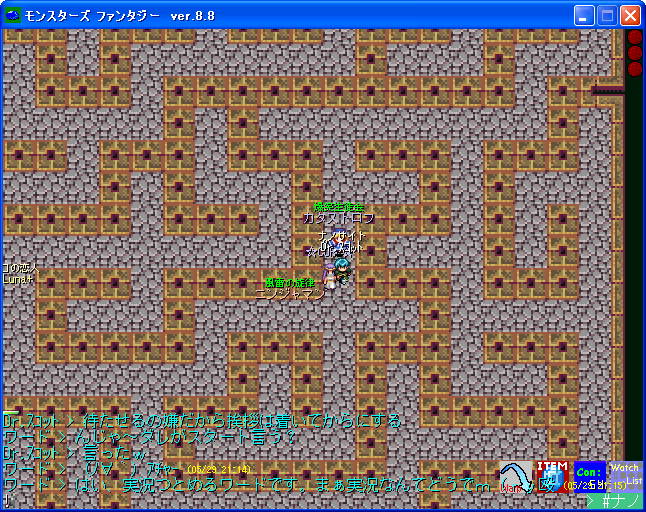
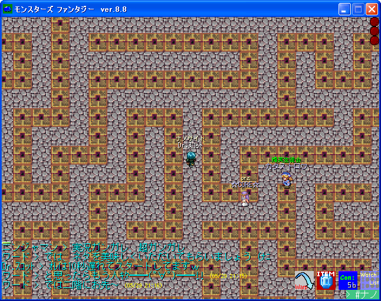
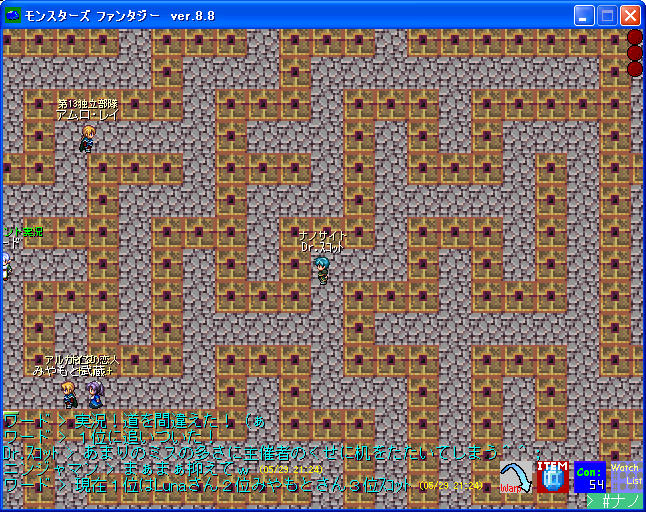

ラビ競走 2005/5/29
|
第1回イベントから362日もの空白を経て、記念すべきナノサイト 1周年の日に第2回ギルドイベントが開催されました。 ルールはこちらに残しておきます。 （ただし参加人数が少なかったためルールは一部変更になりDr.ｽｺｯﾄ さんが緊急参戦、頂上がゴール地点の往路のみになりました。） この時GMを勤めたプラチナさんが司会進行その他全て1人で行った イベントだったため、当初不安はありましたがトラブルもなく無事に 終える事ができました。参加者が4人しか居ませんでしたが、 一緒に走る人も大勢居て楽しかったです。 |
| イベント開催前のひとりぼっちの頂上です。プラチナさんのこの日のPTが丸わかりです（ぇ |
|  |
| スタート直後の写真です（スタート前の写真が撮れてませんでした；）。 正式にエントリーされた参加者は☆CORE☆様、+Luna+様、みやもと武蔵様、カタストロフ様、 そして人数不足のためにナノサイトのエースとして参戦したプラチナさんのパートナーDr.ｽｺｯﾄさんです。 |
|  |
| Dr.ｽｺｯﾄさん3位走行中。 |
|  |
| Dr.ｽｺｯﾄさん、ナノのエースの貫禄を見せ、1位と2位を捕らえます。抜けるか！？ |
 |
| ラビで厄介なのはフェアリーのスピードの速さ。LVが高くても先制できません。これに出くわすと大きく時間をロスします； |
| 我らがDr.ｽｺｯﾄさんは運に見放され、2階、3階と登るに連れてジリジリと離されます。練習の成果はどうした…。ってリタイア！？ |
| やはり諦めてはいけません。この時点で2位までゴールしていますが、再び立ち上がります！ｶｯｺｲｲぞ、ｽｺｯﾄ！ |
| 結果は、1位+Luna+様、2位みやもと武蔵様、3位☆CORE☆様、4位カタストロフ様、失格Dr.ｽｺｯﾄさんでした。 |
| 無事に全員のゴールを確認してから、GMの挨拶です。 |
| 最上階での記念撮影です。 |
| ハラーレ交換所で賞品（1位：ｽｷﾙｼﾞｭｴﾙ×1、2位：ﾊﾟﾜｰｼﾞｭｴﾙ×2、3位：ｽﾋﾟｰﾄﾞｼﾞｭｴﾙ×2、4位：ｳｫｰﾙｼﾞｭｴﾙ×2）を渡した後、 交換所上の広場で記念撮影。ここは約1年前、第1回ギルドイベントが開かれた想い出の場所です。 |
| イベントを終えて解散した後。ホッと一息。 |
| Dr.ｽｺｯﾄ失格の理由は重量規定違反！？…もちろんギャグですｗ主催者が賞品を貰うわけにはいきませんからｗ |
| ｢NANOCITES｣ Web Master:ヨハンソン |